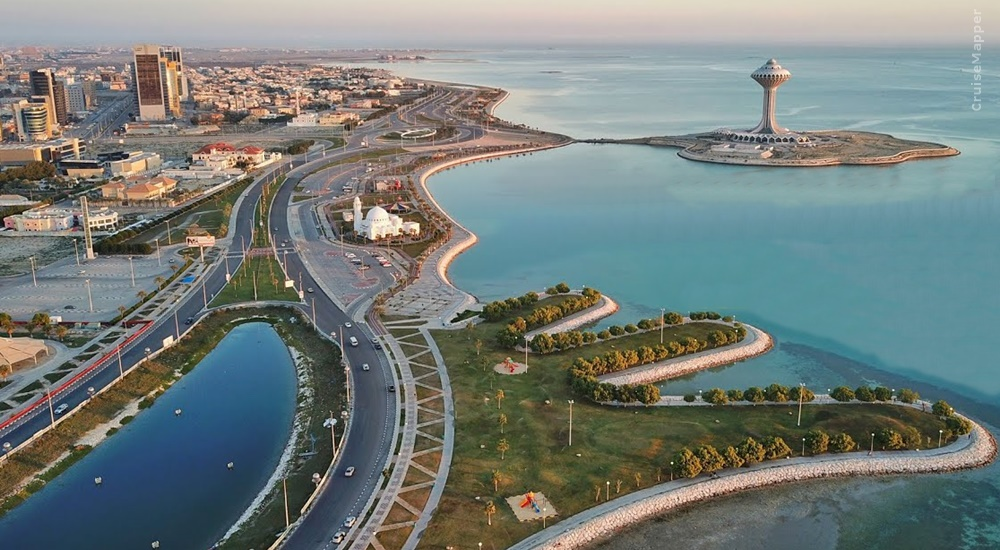
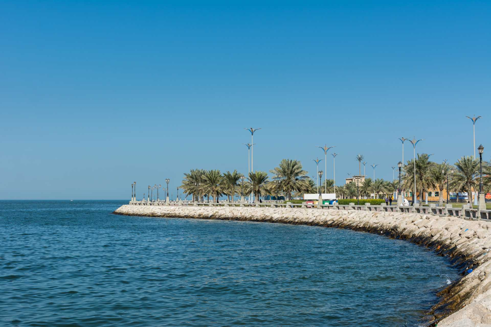
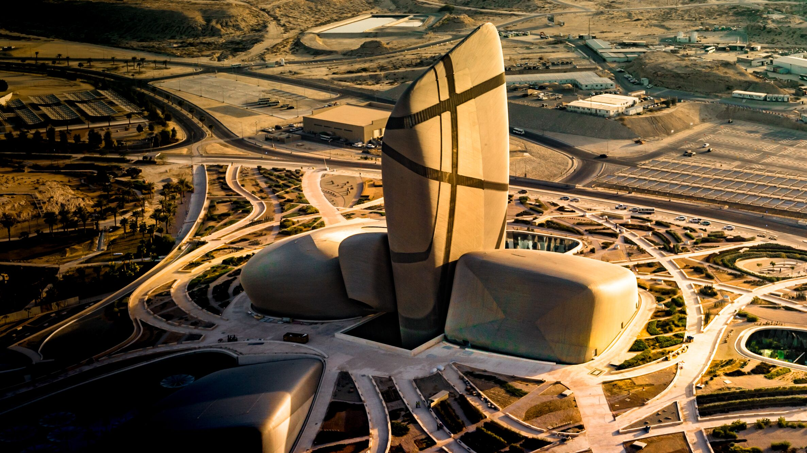
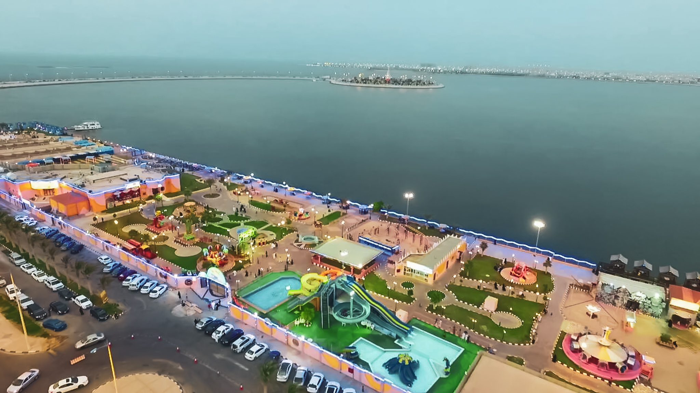
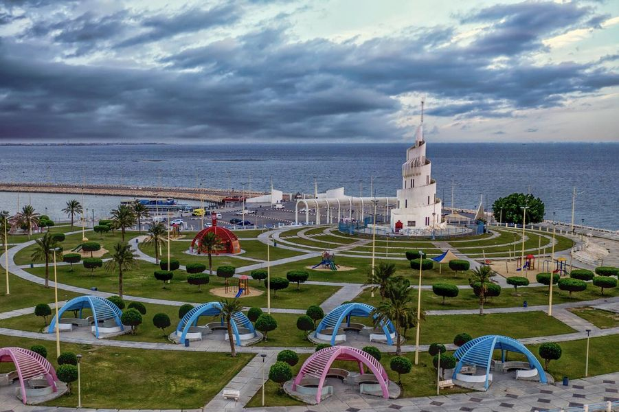

Dammam
Dammam city
Dammam, city, eastern Saudi Arabia. It lies on the Persian Gulf northwest of Bahrain Island and forms a larger metropolitan and industrial complex with Khobar, Qatif, and Dhahran. The discovery of immense oil reserves in the locality in 1938 led to the radical transformation of the once small coastal settlement into a boomtown that is now a major seaport, a petroleum and natural gas centre, the commercial hub of eastern Saudi Arabia, and the eastern terminus of the railroad to Riyadh. Dammam is strikingly modern, with sprawling suburbs; most of the city has been built since the 1940s. Apart from the oil industry, the city’s economy is supported by agriculture, especially dairying. Large herds of imported beef and dairy cattle are kept on experimental farms. King Faisal University opened in the city in 1975. In 1999 King Fahd International Airport opened.
Dammam Corniche
The Corniche Dammam is a 4.5-kilometer-long waterfront promenade that offers stunning views of the Gulf of Bahrain. It is a popular spot for locals and tourists alike to come and enjoy the outdoors. There are a number of restaurants, cafes, and shops along the Corniche, as well as a number of playgrounds and parks. The Corniche is also a popular spot for walking, running, and cycling.
Activities
- Walk or run along the promenade
- Rent a bike and explore the Corniche at your own pace
- Have a picnic lunch in one of the parks
- Go for a swim in the Gulf of Bahrain
- Take a boat trip around the harbor
- Go fishing off the pier
- People-watch and enjoy the vibrant atmosphere
Details
- Open 24 hours a day, 7 days a week
- no entrance fee
- Parking available
- Popular spot for festivals and events
Heritage Village

Heritage Village is a cultural village in Dammam, Saudi Arabia, that showcases the country's rich history and traditions. It features a collection of manuscripts, antiquities, and vintage cars, as well as a traditional Saudi restaurant.
Activities
- Explore the village and learn about Saudi Arabia's history and culture
- Visit the museum and see the collection of manuscripts, antiquities, and vintage cars
- Enjoy a traditional Saudi meal at the restaurant
- Shop for souvenirs at the gift shop
Details
- Open 24 hours a day, 7 days a week
- Entrance fee: SAR 10 per person
- Free parking available
- Wheelchair accessible
King Abdulaziz Center for World Culture - Ithra
The Ithra Museum is home to five galleries, respectively dedicated to contemporary Middle Eastern Art, Saudi culture, Islamic art, the natural history of the Arabian Peninsula and Archive gallery. With each gallery focusing on a specific theme, the Museum invites conversation igniting new ideas and new forms of cultural expression.
Activities
- Explore the museum and learn about Saudi Arabia's history and culture
- Visit the library and see the collection of manuscripts, antiquities, and vintage cars
- Enjoy a traditional Saudi meal at the restaurant
- Shop for souvenirs at the gift shop
Details
- Open 24 hours a day, 7 days a week
- Entrance fee: SAR 10 per person
- Free parking available
- Wheelchair accessible
Dolphin Village
Dolphin Village is a marine park in Dammam, Saudi Arabia, that features a variety of marine animals, including dolphins, sea lions, and penguins. It also has a number of rides and attractions, including a roller coaster, a Ferris wheel, and a carousel.
Activities
- Watch the dolphin show
- See the sea lions and penguins
- Ride the roller coaster, Ferris wheel, and carousel
- Enjoy a meal at one of the restaurants
- Shop for souvenirs at the gift shop
- There are designated swimming places for everyone
Details
- Open at 3PM to 12AM 6 days a week
- Entrance fee: SAR 30 per person
- Free parking available
- Wheelchair accessible
Murjan Island
Marjan Island is an artificial, beautiful small island connected to the nearby city of Dammam by road. There is no entry fee to the island. The best location for an evening drive with your family or friends and enjoy good enjoyment. It is a good spot for arranging picnics and fun family getaways. There is a tower that you can climb to get a panoramic view of the corniche, particularly at night, and enjoy a picturesque view of the surroundings. It is a great getaway for those who want to enjoy a slice of nature! It is better to visit at sunrise or sunset time for a wonderful view. It’s an ideal fishing spot also. It’s a beautiful place to spend some time for a picnic, walking, relaxing, and taking photos. Kids enjoy the location where they can enjoy slides and swings. There are tent-like areas where you can sit and have your meal. There is ample parking available on the Island. We found the toilets clean. There are many convenience/cart shops and movable stores where you can get eatables, snacks, and refreshments. Some other activities one can indulge in are the sea lion show, cruise trip, water bike ride, speed boating ride, and other functions. In short, it is a worth visiting place.
Activities
- Enjoy a picnic lunch in one of the parks
- Go for a swim in the Gulf of Bahrain
- Take a boat trip around the harbor
- Go fishing off the pier
- People-watch and enjoy the vibrant atmosphere
Details
- Open 24 hours a day, 7 days a week
- no entrance fee
- Parking available
- Popular spot for festivals and events